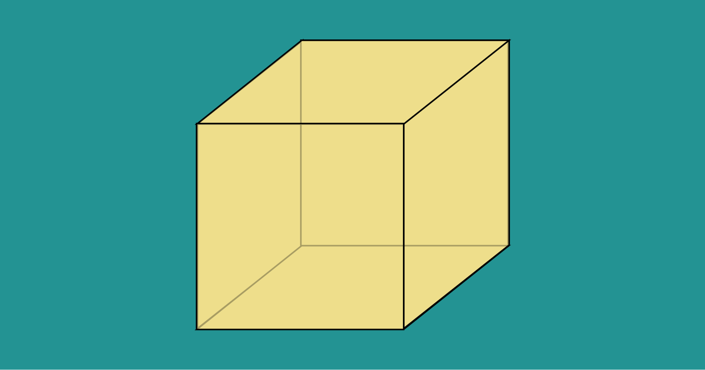

Cubo
Um cubo é uma forma geométrica 3D com seis faces quadradas de tamanho igual e todos os ângulos internos iguais a 90 graus.
Calcular área
Para calcular a área de um cubo, é preciso calcular a área total de todas as suas faces. Como um cubo tem seis faces que são todas iguais, é possível calcular a área de uma delas e multiplicar por 6.
A fórmula para a área de uma face de um cubo é:
Área da face = L²
Onde L é o comprimento de um dos lados do cubo. Portanto, a área total de um cubo é:
Área total = 6 x Área da face = 6L²
Então, para calcular a área de um cubo, você só precisa saber o comprimento de um dos lados.
Por exemplo, se o comprimento do lado de uma das faces do cubo é 5 metros, então a área do cubo é:
Área do cubo = 6 x (5²)
Área do cubo = 6 x 25 = 150 metros
Resultado: